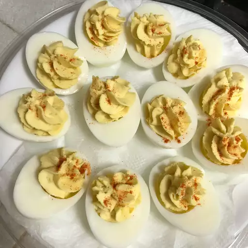

Deviled Eggs

How to cook deviled eggs
These deviled eggs are delicious for Easter brunch and are always popular at our holiday parties. Adjust the amount of salt and sugar in this recipe to suit your taste. I like to add onion and celery for a little more texture.
Ingredients
- 6 eggs
- Mayonnaise
- A teaspoon of white sugar
- A teaspoon of white vinegar
- Mustard
- An onion and celery
- Salt and paprika
Steps
- Cut the boiled eggs in half and remove the yolks. Reserve the whites.
- Mash the yolks with a fork and add the remaining ingredients.
- Stuff or pipe the filling into the egg white halves.